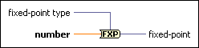

To Fixed-Point Function
Owning Palette: Conversion VIs and Functions
Requires: Base Development System
Converts any non-complex number to fixed-point representation.
If you do not wire a value to the fixed-point type input or configure the output settings of this function, the data type of the fixed-point output adapts to the data you wire to the number input. For example, if you wire an 8-bit unsigned integer to the number input, LabVIEW returns an 8-bit unsigned fixed-point number with 8 integer bits. This function saturates the number by default if overflow occurs.

 Add to the block diagram Add to the block diagram |
 Find on the palette Find on the palette |